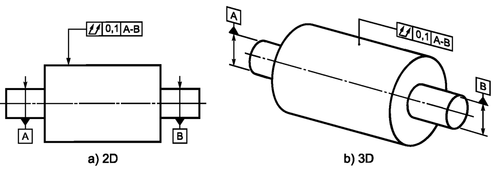
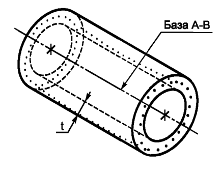
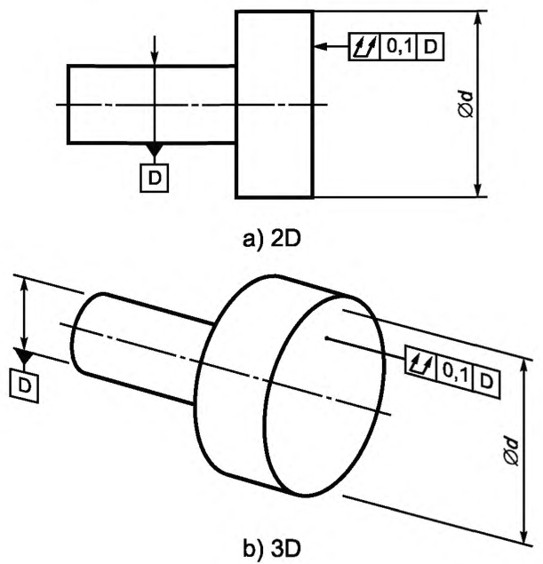
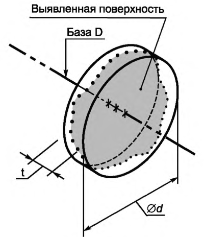

Выявленная нормируемая поверхность должна быть расположена между двумя соосными цилиндрами, разность радиусов которых равна 0,1, а их общая ось совпадает с общей базовой осью A-В, см. рисунок ниже
Поле допуска ограничено двумя соосными цилиндрами, разность радиусов которых равна значению допуска t, а их общая ось совпадает с базой, см. рисунок ниже
Выявленная нормируемая поверхность должна быть расположена между двумя параллельными плоскостями, расстояние между которыми 0,1, перпендикулярными кбазовой оси D, см. рисунок ниже
Поле допуска ограничено двумя параллельными плоскостями, находящимися друг от друга на расстоянии, равном значению допуска t, и перпендикулярными к базе, см. рисунок ниже
